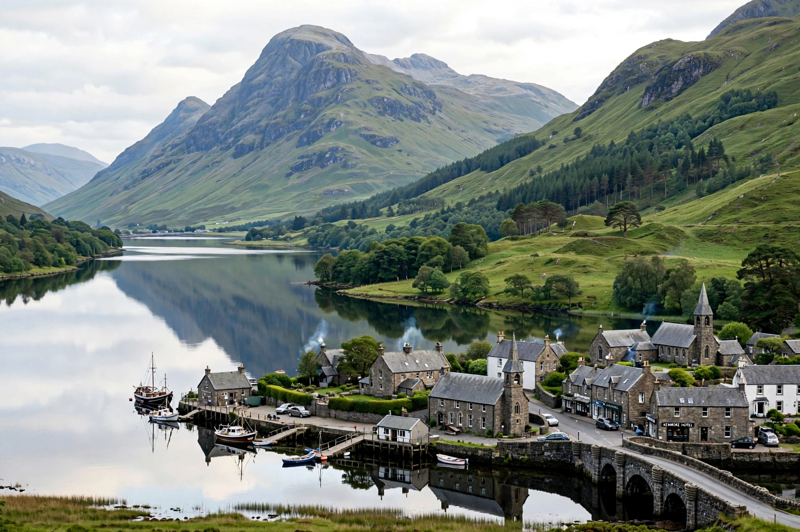

Loch Tay (Scottish Gaelic: Loch Tatha) is a freshwater loch in the central highlands of Scotland, in Perth and Kinross and Stirling. It is about 23 km long and is drained by the River Tay, Scotland's longest river.

The loch lies along the Highland Boundary Fault, flanked by Ben Lawers to the north. Villages include Killin at the western end, Kenmore at the east, and Lawers and Fearnan on the shores.
Loch Tay was home to many crannogs — artificial island dwellings — in the Iron Age. A replica, the Scottish Crannog Centre near Kenmore, illustrated prehistoric life before fire damage in 2021. Priory Island was a burial place associated with Queen Sybilla.
The loch supports salmon, trout and other fish, sailing, kayaking and walking, and forms part of the Loch Lomond and The Trossachs wider landscape tourism area via Killin.